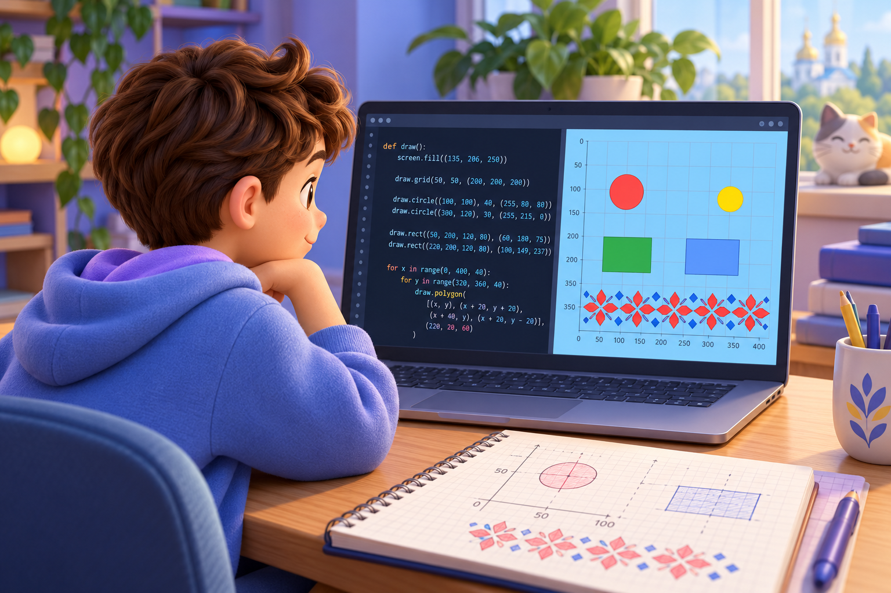
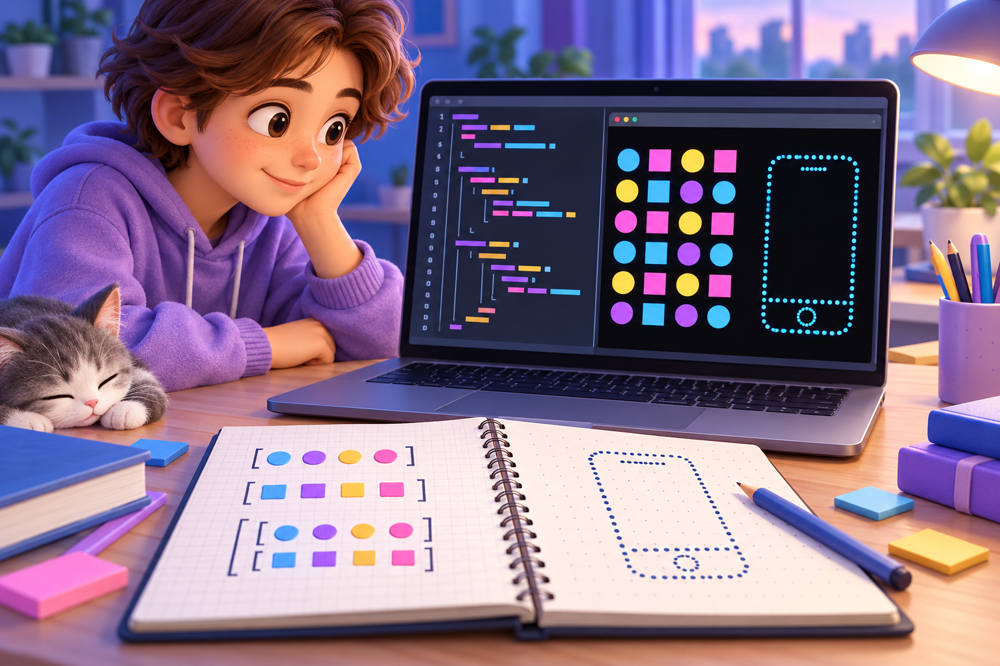
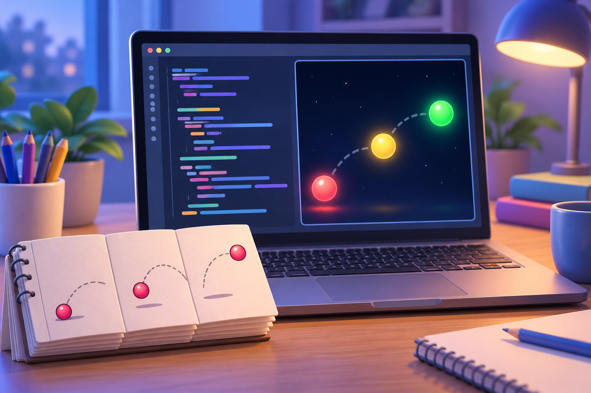
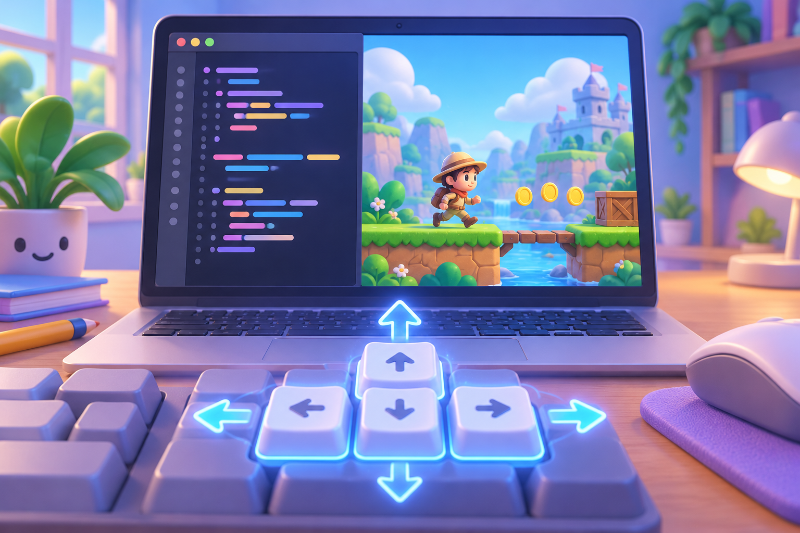
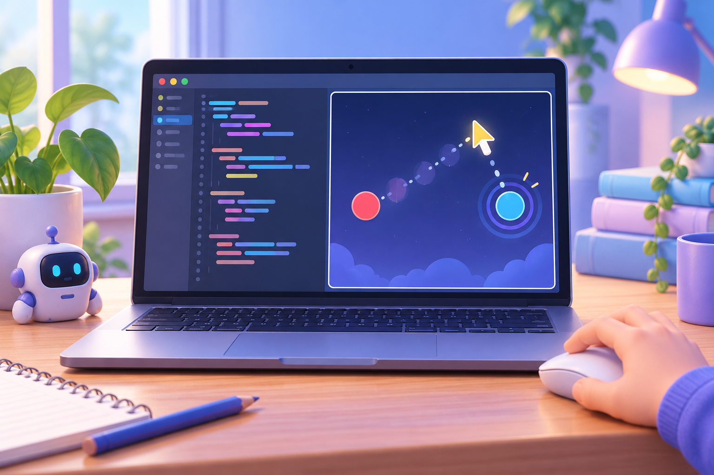
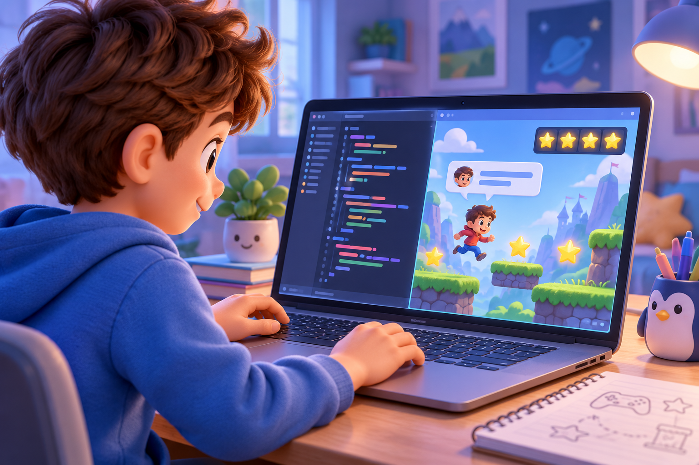
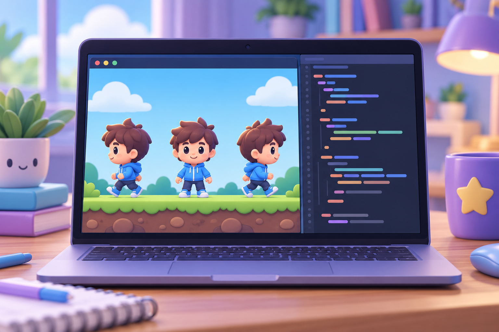
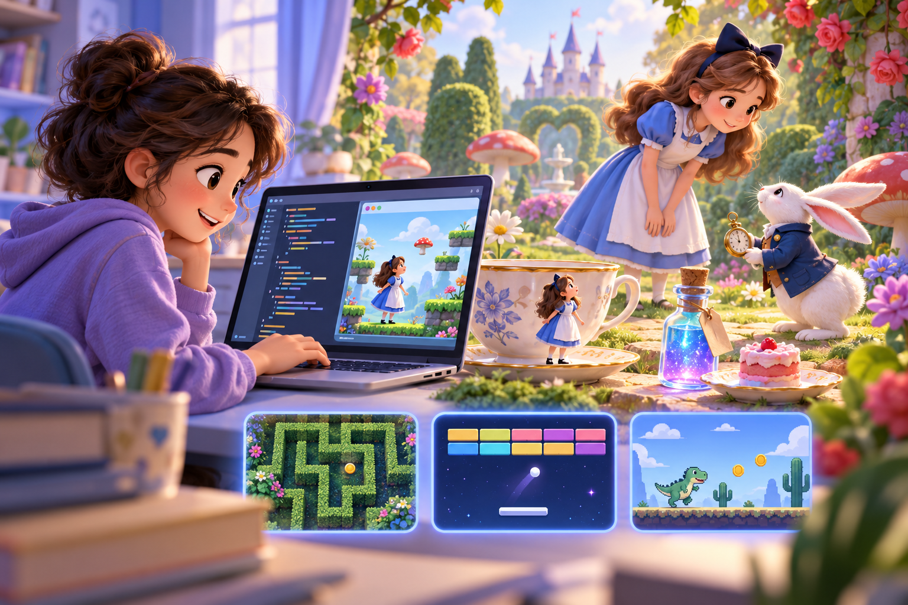

PyGame Zero:
від фігур до власної гри
Створюйте ігрові сцени крок за кроком: малюйте, додавайте персонажів, програмуйте керування й збирайте власний проєкт.

Відкрийте урок, скопіюйте код і запустіть його в ePython. Для графічного вікна PyGame Zero та імпорту власних зображень скористайтеся PGZ Studio. У кожному уроці є покрокова інструкція, код для експерименту, підказка, відповідь і вправа на впорядкування кроків.
Маршрут курсу
Перший екран: фігури й координати
Створюємо ігрове вікно, розміщуємо фігури за координатами й малюємо простий орнамент циклом.

Орнамент із циклів і списків
Зберігаємо дані у списках і створюємо повторювані візерунки циклами. Перетворюємо координатну сітку на цифровий орнамент.

Оживляємо фігури: анімація
Досліджуємо, як draw() показує кадр, а update() змінює дані для наступного. Рух виникає зі зміни координат.

Додаємо зображення: актори й PNG
Додаємо власний PNG у ресурси проєкту, створюємо Actor і розміщуємо персонажа на сцені.

Клавіатура керує героєм
Перевіряємо натиснуті клавіші в update() і змінюємо координати персонажа. Додаємо межі ігрового світу.

Мишка: рух і події
Реагуємо на рух миші та натискання кнопок. Переносимо об’єкт за курсором і змінюємо його колір.

Ігрова логіка: рахунок і повідомлення
Додаємо до сцени інструкцію, змінну рахунку та повідомлення про результат. Збираємо всі частини в зрозумілу гру.

Костюми персонажа й стани руху
Змінюємо вигляд героя залежно від напрямку руху: спокій, рух ліворуч і рух праворуч.

Гра «Уникай перешкод»
Керуємо гравцем, рухаємо перешкоди та перевіряємо зіткнення. Кожне успішне ухилення може додати бал.

Майстерня ігрових проєктів
Оберіть ідею — лабіринт, Арканоїд, Діно, безпечний перехід або дослідницьку гру про Алісу — і перетворіть її на власний проєкт.